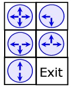

Universidade da Beira Interior
21-10-2006
Problem G
Round and Round Maze
You have been blindfolded and brought to a strange complex of mazes.
Each maze is divided in squares, each one with a strange circular
plate with arrows on it. The start of each maze is on the upper left
corner and the exit is always on the bottom right. The following
figure shows an example maze:
During a single time unit you can go from a square to one of the four
adjacent squares. But you can only follow the directions that the
arrows on your current square point. Trying to do other thing will get
you killed. Each time you pass from one square to another, all plates
rotate 90 degrees in clockwise direction, changing the way the maze
looks. Is it possible to get to the exit? And what is the best and
fastest way to do that?
Problem
Given a particular maze in the conditions described
above, your task
is to discover how much time does it take the quickest path from the
upper left corner to the bottom right corner (the exit). You must also
discover if that is not possible.
Input
The input file contains several test cases, each of them as describes below.
The input will start with a single line containing two
numbers
separated by a single space: R and C indicating respectively the
number of rows and columns of the maze (2 R,C 500).
Then there are exactly (R*C)-1 lines indicating in which directions
are the arrows of each square pointing. These lines are given in a
specific order, starting from the north to the south, and from the
west to the east. This is, if we use the notation (row,column), the
lines are given in the order
(1,1),(1,2),...,(1,C),(2,1),...,(2,N),...,(R,1),...,(R,C-1). The
bottom right corner (R,C) is not given, since it is always the exit.
Each of these lines contains a single string of length one to four
chars, indicating the arrows of the plate on time 0. The chars belong
to the set N,S,W,E and represent respectively an arrow pointing to
North, South, West and East. See example input 1 for a representation
of the example maze given in figure 1. There will not be repeated
chars on the same line and the chars can appear in any order.
Output
For each test case, the output should contain a single line with an integer that represents the time taken by the quickest path from the start (always square (1,1)) to the exit (always (R,C)). Remember that the plates
always rotate when you change your current square (therefore is does
not help to stay on the same place waiting for a rotation - it won't
happen!) and you can only follow the directions that the arrows point
on the present time you are on that square.
If there is no path from the start to the exit you should print "no
path to exit".
Sample Input
2 2
NES
S
WS
3 2
NSWE
SW
SEW
NEW
SN
Sample Output
4
no path to exit

Figure 3: The maze of the sample input 2
Maratona Inter-Universitária de Programação 2006
MIUP'2006
Author: Pedro Ribeiro (Universidade do Porto)